LODESTAR
User manual · lodestarvtt.com
What Lodestar is
Lodestar is a battlemap display tool for game masters. You run it from one browser window (the GM screen) and cast a second window (the player display) to a TV or second monitor. The GM sees everything; the players see only what you reveal.
Everything runs locally in your browser — no account, no cloud, nothing uploaded. Your maps live in your browser's storage on your own machine. It works fully offline once loaded.

Getting started
- Go to lodestarvtt.com and click Open Lodestar on the welcome screen (or just press Enter).
- In the top of the left panel, click the Load map button (the image icon) and pick a map from your computer: an image, an animated GIF, or a video (MP4 or WebM).
- The map appears. Use the mouse wheel to zoom and drag to pan. Press F (or click Fit) to frame the whole map.
The left panel is organised into collapsible sections (Splash Screen, Grid, View, Floors, Map library). Click a section title to open or close it. You can hide the whole panel with the tab on the left edge of the map to give the map more room; the tab on the right edge does the same for the music and initiative column.
Map files
A map can be any image your browser opens (JPG, PNG, WebP…), an animated GIF (animated WebP and PNG work too), or a video (MP4 or WebM). Animated maps loop on both screens with fog, grid and tokens drawn on top, and videos stay in step between your screen and the players'. Untick Play animated map in the View section to freeze them. Videos play muted — use the music player for sound.
Want to look around first? Click Try the demo on the welcome screen to open a sample three-floor map with fog, tokens, initiative and music already set up.
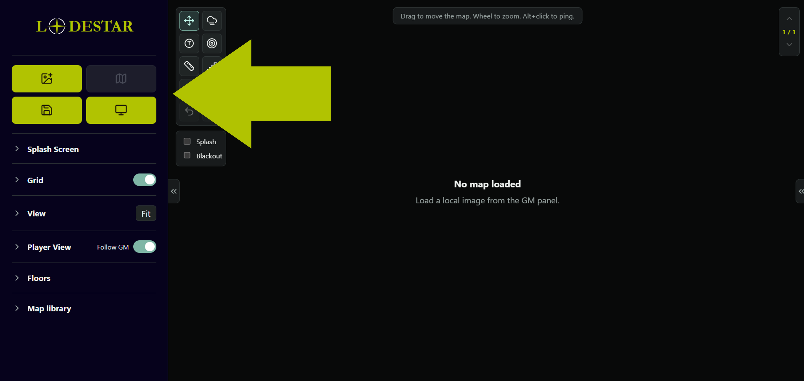
The player display ↑ top
Click Open player display (the monitor icon at the top of the panel). A second window opens — drag it onto your TV or second monitor and press F (or double-click) to make it fullscreen.
The player window shows the same map, but with fog as solid black and none of your GM-only tools. By default it follows your view; a red dashed rectangle on your GM screen shows exactly what the players are currently seeing.
- Follow GM (the Player view controls in the View section): when on, the player screen mirrors your pan/zoom. Turn it off to frame the players' view independently with the zoom and position sliders.
- Match GM view snaps the player view to your current framing once; Fit player view fits the whole map to the player screen.
- You can drag the red frame itself to pan the players' view without moving your own (see Rotating & the player frame).
- Smooth fades (View section, on by default): on the player display, fog you reveal fades away instead of vanishing, and switching map or floor, or turning the splash or blackout screen on or off, fades through black. Untick it for instant changes.
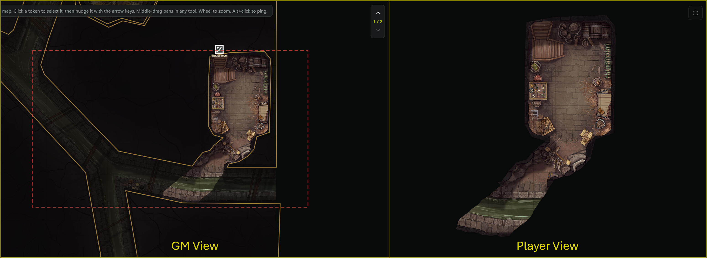
Weather ↑ top
The Weather section of the GM panel sets the mood on the player display: Rain, a Storm (heavier rain with lightning), Snow, drifting Fog, or rising Embers for fire and ruin. Intensity sets how heavy it is, and Wind which way it blows.
- It plays over the map on the player display, and is hidden while the splash or blackout screen is up.
- You see a faint copy on your screen so it never gets in the way; untick Show it faintly on my screen too to hide it there.
- During a storm, lightning flashes softly every several seconds; Lightning now calls one on cue. On a computer set to reduce motion there's no lightning.
- The weather is saved with the map, so each location keeps its own.
Grid & calibration ↑ top
The Grid section toggles the square grid and adjusts its size, offset, colour, opacity, and token snapping.
Calibrate to a map's own grid
If your map already has a printed grid, you don't have to match it by hand. Click the small square-dashed button next to the size slider (it's also in the Measure tool), then drag a square over exactly one cell of the map. Lodestar sets the grid size and lines the grid up to that cell, so tokens snap onto the map's own squares — even with the grid overlay hidden. The ruler is calibrated at the same time.
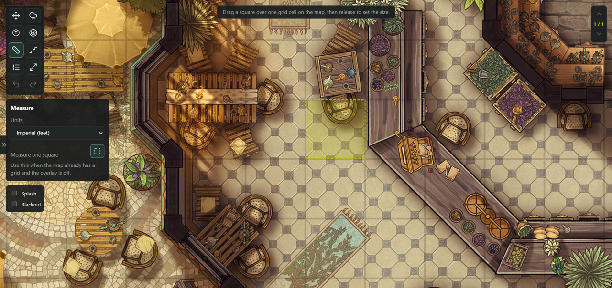
Fog of war ↑ top
Click the fog tool in the toolbar to open the fog ribbon. Fog hides the map from players; you cover areas and clear them as the party explores. Tokens and images sit under the fog, so anything in a hidden area is concealed.
- Fog area — click corners to trace a polygon, Enter to place. Named area adds a GM-only label.
- Fog shapes — drag to drop a rectangle, square, ellipse, circle, or triangle.
- Paint — brush fog on freehand (adjustable round/square brush; [ / ] resize it).
- Bucket — fill the entire map with fog at once.
- Erase — wipe brush/bucket fog away; you can paint back over an erased spot normally.
- Right-click a polygon area to remove it and clear the brush/bucket fog inside it (other polygon areas are left alone).
- Clear all fog empties everything.
On your GM screen fog shows as an adjustable tint so you can still see through it; players see solid black. Every fog tool opens a small options card where you set that tint (GM tint) and how see-through it is (GM opacity). Named areas show their label on your screen only.
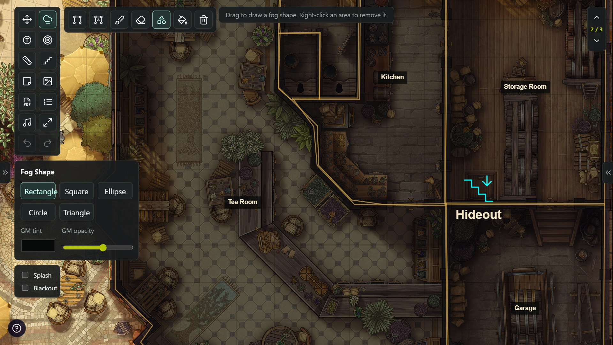
Tokens ↑ top
Select the Tokens tool. Click to drop a token, drag to move it, right-click to remove it. In the token options you can set a colour, a 1–4 cell size, a short label, or load a custom image.
Bulk-add: use "Add image tokens" in the token options and multi-select several image files — Lodestar drops one token per image in a tidy grid for you to arrange.
In Move mode you can drag a token to move it, or click it once to select it. A selected token shows eight pop-out orientation arrows — click one to step a cell in that direction, including diagonals; the keyboard arrow keys nudge it too (Delete removes it). As you step it, Lodestar traces the actual path and shows the distance moved, counted with the D&D 5e alternating-diagonal rule (every other diagonal costs an extra square). Dragging with the mouse shows the distance as well. Tokens snap to the grid and appear on both screens.
Tokens linked to an initiative entry show a small HP bar under them on your screen only, so monster health stays hidden from the table (see Initiative tracker).
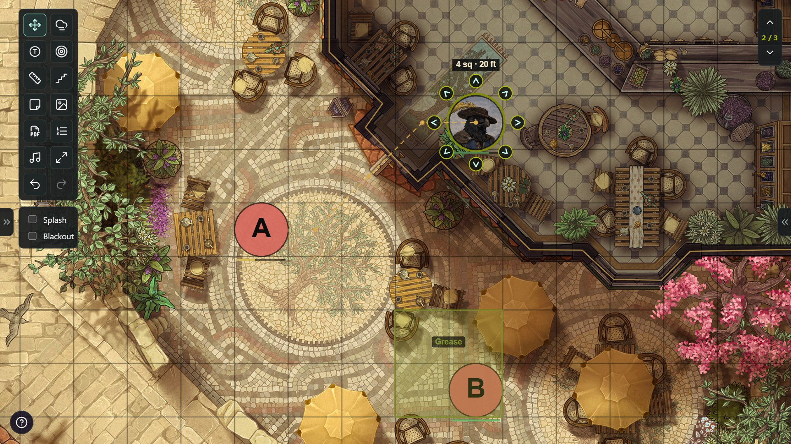
Edit a selected token
When you select a token in Move mode, the token options open as Selected token and edit that token live: its colour, size, label, and image. Two extra fields appear:
- Notes (GM only) — tactics, loot, secrets. Hover the token to see its note beside the cursor. Notes never reach the player display.
- Hidden from players (stealth) — the token disappears from the player display entirely (it isn't even sent there) and shows translucent with a dashed ring on yours. Untick it when the rogue steps out of the shadows.
All the edits you make to one selected token undo together with a single Ctrl+Z.
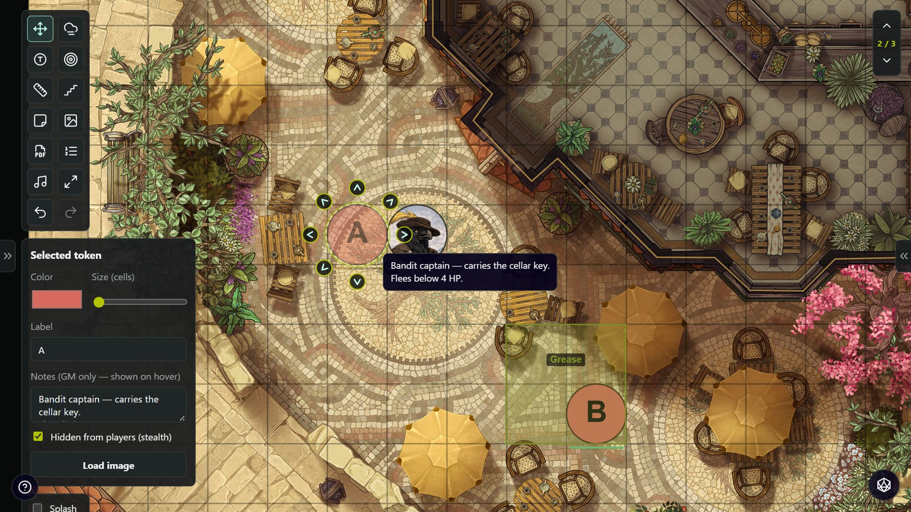
Conditions
A selected token's Conditions list tracks what's affecting it. Use the menu beside the heading to pick your game: D&D 5e (blinded, charmed, exhaustion levels 1–6, prone…) or Pathfinder 2e (clumsy, frightened, off-guard, dying…). The choice applies to every token and is remembered. Pick a condition from + Add a condition… and it appears as a small coloured badge with a short code (Pr for prone) around the token's edge, on your screen and the players'.
- Conditions with a value (exhaustion, or PF2e's frightened, drained, dying…) have − / + buttons; the number shows in the badge's corner. Lowering it below 1 removes the condition.
- Type a number of rounds and it counts down with the initiative tracker's rounds, then drops off by itself. Leave it empty to keep it until you remove it.
- GM makes a condition GM-only: it shows with a dashed ring on your screen and is never sent to the players (a secret curse, a hidden charm).
- Hover a token to see its conditions spelled out. Linked characters also show them in the initiative panel and the turn-order overlay.
Saved rolls
Under Rolls, save the dice a creature uses — a name and the dice, like Scimitar and 1d20+4. Click one to roll it with your dice style; the result is labelled with the token's name ("Goblin · Scimitar"). While the token is selected, its rolls also appear at the top of the dice tray. Saved rolls are for you only and never reach the player display.
Images, notes & PDFs ↑ top
Map images
Drag an image file straight onto the map (or use the image button in the map toolbar) to drop it as a movable picture — handy for handouts, props, or overlays. In Move mode, click it to select; a transform box appears: drag the corners to resize (aspect ratio is kept), grab the ball on the stem above it to rotate, and tick Show to players to reveal it on the player display (hidden by default). There's also a Snap images to grid option in the View panel.
Notes
The note tool (sticky-note icon in the toolbar) drops a GM-only beige note where you click. Type straight into it; a small toolbar floats above the focused note with a font picker, size, and bold / italic / underline / strikethrough. Drag the title strip to move it, drag the bottom-right corner to resize, and use the × to delete. Notes are sized relative to the grid and scale with the map, and they never appear on the player display.
PDF resources
The PDF button opens one or more local PDFs (character sheets, stat blocks, rules) in floating, draggable, resizable windows — GM-only. Use Swap to load a different file into a window, and × to close it. PDFs live only in the current tab: they're never synced to players or saved into a map.
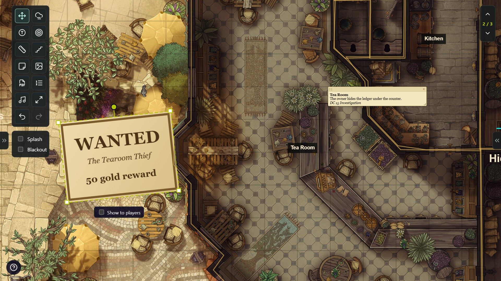
Area of effect ↑ top
The Area of effect tool shows a live spell template that follows your cursor on both screens — a circle, cube/square, or cone. Pick the shape and a size in feet (presets or a custom value), and choose a colour. The cone rotates with the mouse wheel or the direction slider.
Leave an area on the map
Hovering is for aiming; click to drop the area as a persistent marker — for a Grease, a wall of fire, or a lingering cloud. Lodestar asks for an optional label (GM-only). Markers stay put on both screens until you remove them:
- Double-click a marker to edit its label.
- In Move mode, click a marker to select it; the View section then shows its label and a Show to players switch, so you can keep a hidden trap's area to yourself.
- Right-click a marker (or select it and press Delete) to remove it.
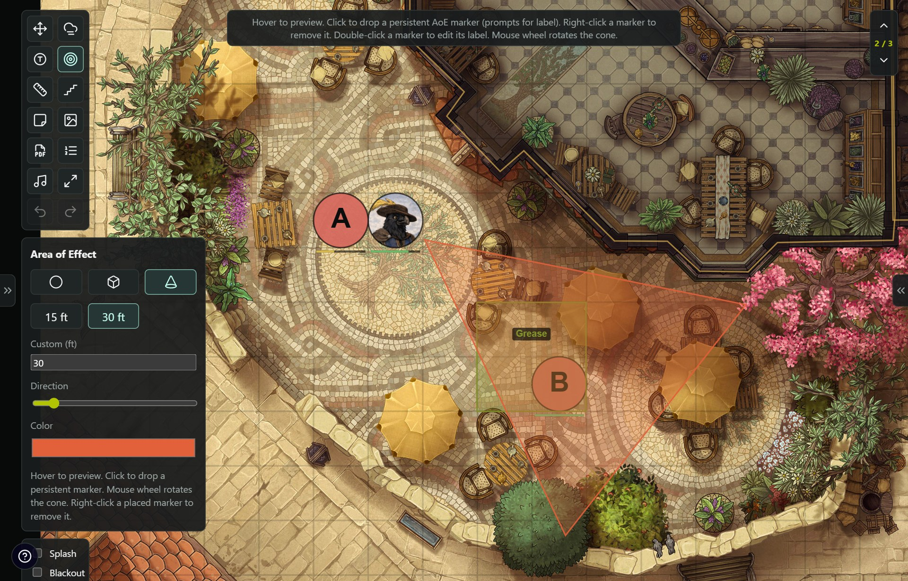
Measure & ping ↑ top
- Measure — drag to measure distance; it reports grid cells and your choice of feet or metres. (If the map has its own printed grid and the overlay is off, calibrate the ruler with the drag-a-square button.)
- Ping — hold Alt and click anywhere to drop an animated marker on both screens — great for "look here".
Dice roller ↑ top
Click the d20 button in the bottom-right corner of the map (or press D) to open the dice tray. Real 3D dice tumble across the map, bounce off the edges and each other, and settle; the total then appears at the top of the screen with every die listed.
- Build a roll by clicking dice on the pad — click d20 twice for
2d20, then d6 for2d20+1d6— or type it:1d20+5,3d8-1,d%. A badge on each die shows how many are in the roll; right-click a die (or shift-click it) to take one back off, and Clear, beside the roll box, removes them all. Press Enter or Roll. - Adv / Dis roll the d20 twice and keep the higher / lower (
2d20kh1/2d20kl1), keeping your modifiers. The dropped die stays on the table, dimmed, and is struck through in the result. - Keep or drop dice yourself with
kh,kl,dlanddh—4d6dl1rolls ability scores. - Every die is a real 3D shape: d4, d6, d8, d10, d12, d20, and d100 (a tens die plus a units die). Unusual sizes like a d3 still roll, just without a 3D die.
- Players see the roll: tick it to throw the dice on the player display too — the very same tumble, landing on the same numbers. Leave it off for a secret roll that never leaves your screen (marked GM only).
- Recent rolls are listed in the tray; click one to roll it again. Your dice style, the sound switch, and the players-see setting are remembered.
- Dice style (at the bottom of the tray) changes how your dice look, with a live preview: pick a ready-made look (Ruby, Bone, Gold, Ice, Obsidian, Emerald) or set the colour, the numbers' colour (Auto picks light or dark to suit), the size, the finish (satin, matte, glossy, metal or see-through glass), the font, and an effect: a glow, a trail, or sparks where the dice bounce. Flash natural 20s and 1s makes a d20 burst gold on a 20 and pulse red on a 1. Players see your dice exactly as you styled them. Bigger dice leave less room, so fewer fit in one throw.
Results come from the dice physics themselves — whichever face ends up on top — and each throw is seeded with your browser's cryptographic random generator, so every face is equally likely.
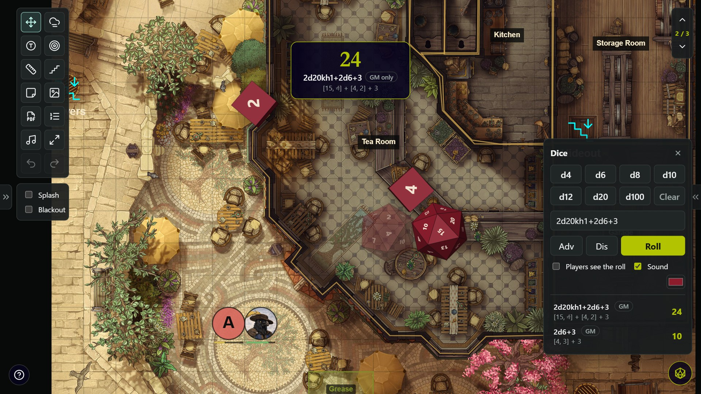
Initiative tracker ↑ top
Open the initiative tracker from its toolbar button (the numbered-list icon) or the retract tab on the right edge of the map. Add players, NPCs, and monsters with an initiative score and HP. Advance turns and rounds with the arrows, track damage and healing with the HP bars, and click a name to set the current turn.
Let Lodestar roll for the monsters
- In Init, type a modifier like
+2or-1(or a roll liked20+2) instead of a number: Lodestar rolls it as the creature is added and remembers it. - In HP, type hit dice like
2d8+2to roll the creature's hit points. - The lime d20 in the round bar, Roll initiative, rolls again for everyone added with a modifier — as one throw of dice only you see — and re-sorts the order. The banner lists each result. At the start of a fight the order starts from the top; mid-fight, the current turn stays put.
A compact order overlay can sit in the corner of the screen:
- The GM toggle shows it on your screen; the Players toggle mirrors it to the player display.
- It stays visible even when the full panel is retracted, and has its own ‹ / › arrows to move through the round without reopening the panel.
Link a character to its token
Each row has a small crosshair button that ties the character to a token on the map:
- Click the crosshair, then click a token on the map to link them. The token takes on the row's colour and a short label from the name.
- Once linked, the crosshair lights up — click it again to locate that token (the view centres on it and it pings). Alt-click the crosshair to unlink.
- The token of whoever's turn it is wears a glowing turn ring on the battlefield, so the table can see who's acting at a glance. The ring follows the same Players toggle as the order overlay.
Concentration
Each row also has a small C button that marks a combatant as concentrating on a spell. Click it to toggle the state on or off — it lights up when active. The state mirrors as a small C badge next to the combatant's name in the order overlay, on both the GM and player screens.
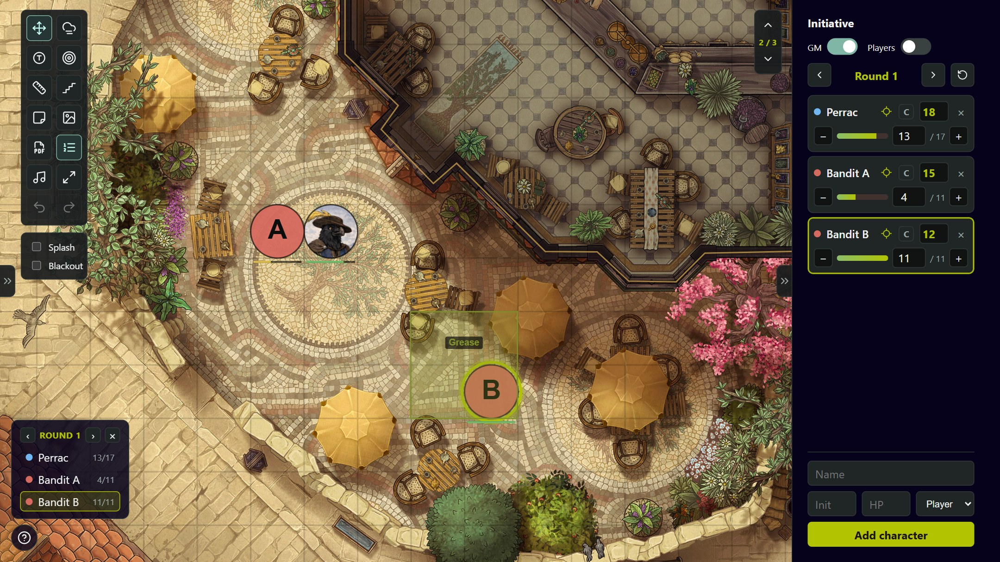
Music & sound ↑ top
Open the music panel from its toolbar button (the musical-notes icon). It docks above the initiative tracker on the right and runs three layers that all play together: a looping Music track, a looping Ambiance bed underneath it, and one-shot SFX stings on top.
- Music & Ambiance. Each is an independent looping layer — load a clip with the download-arrow button, then play / pause it. Run a soundtrack on the Music layer and an environment loop (rain, tavern, wind) on the Ambiance layer at the same time. Leave Loop on for beds or off for a single play-through, and each layer has its own volume slider.
- SFX. Load one or more clips and they appear as a tight grid of soundboard pads — click a pad to fire that effect as a one-shot over the beds. They share one volume slider. Hover a pad and a small × appears in its corner to remove it.
- Scenes. Once the layers are loaded the way you like, press + Scene to save that whole mix (both beds and the SFX set) under a name. Click a scene chip to recall it instantly (the beds swap in paused, ready to play). To remove one, select its chip and use the Delete button at the top of the panel — it only lights up once a scene is selected, so you can't delete one by accident.
Everything is mirrored to the player display, so the table hears it too. Because browsers block audio until the window has been clicked, the first time a track starts the player display shows a one-time “Click to enable table audio” button — click it once and audio flows from then on. Loaded audio lives in this browser tab only; it is not bundled into saved maps.
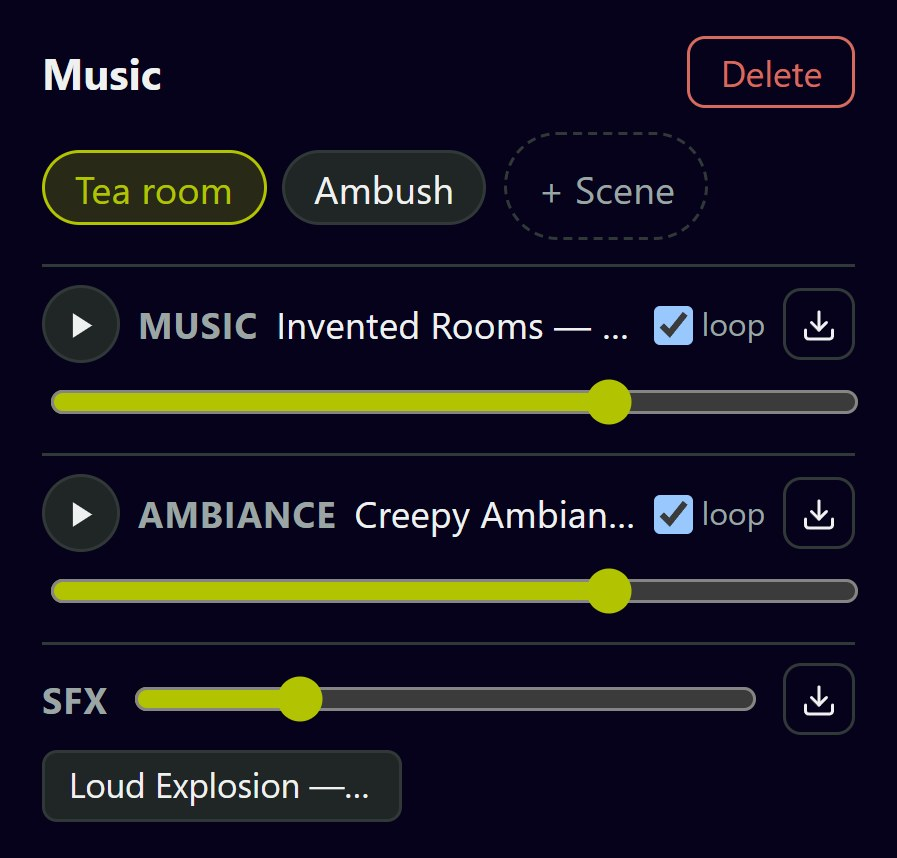
Rotating & the player frame ↑ top
Rotate the map
In the View section, the Rotate map arrows turn the whole battlemap in 90° steps — fog, tokens, and stairs all rotate with it, and the players follow. You can also rotate just the player view (Player view controls, further down the View section) so the map reads right-side-up from across the table, without rotating your own screen.
Drag the player frame to pan the TV
The red dashed rectangle is what the players see. In Move mode you can grab it and drag it to pan the player display in real time — perfect for following the party around a large map without touching your own view. Dragging it switches Follow GM off for you.
Under the Player view controls you can hide the frame (Show player frame on GM screen) or change its colour and opacity if red clashes with your map.
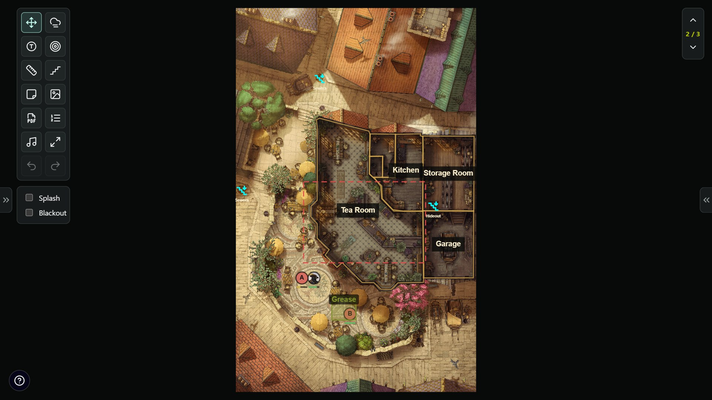
In-person play on a TV ↑ top
Lodestar is built for playing in person with a TV laid flat as the battlemap and physical miniatures on top. The player display becomes the tabletop; you drive it from your laptop.
- Open the player display and put it fullscreen on the TV.
- Turn Follow GM off so the TV has its own framing.
- Zoom the player view until one grid square on the TV matches the footprint of your minis.
- Tick Lock square size on player screen (IRL TV) in the Player view controls (View section).
From then on, the square stays that exact physical size across maps. Different maps have different resolutions, so when you load a new one you just calibrate its grid (drag a square over one cell) and the player zoom adjusts itself automatically — your minis always match. The setting is remembered between sessions. Drag the red frame to slide the visible area around as the party moves.
Tip: use Rotate player view only so the map reads the right way up for the players on the far side of the table, while your laptop keeps its own orientation.
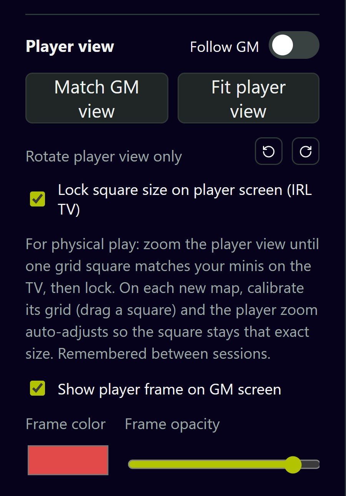
Floors, stairs & splash ↑ top
Floors
Build multi-level locations — a cellar, the ground floor, the roof — where each floor has its own map, fog, tokens, images, notes and view. In the Floors section, use Add above / Add below to create a floor, give it a name, and load its map as usual. Switch floors with the ↑ / ↓ widget in the top-right of the map (it shows e.g. 2 / 3); the player display follows you. Delete this floor removes the current one.
Stairs
Once you have at least two floors, pick the Stairs tool (S) and click the map. Choose which floor it leads to and, optionally, a short label (“To Sewers”). The marker shows an up or down arrow depending on direction. In Move mode, click a stair to jump to its floor; right-click it to remove it. Stairs are GM-only — players never see them — and their colour is set in the Floors section.
Splash & blackout
Load a title card or handout in the Splash Screen section, then tick Splash (under the toolbar) to show it full-screen on the player display instead of the map — handy between scenes. Blackout shows a plain black screen instead. Your own screen keeps showing the map either way.
Saving & backups ↑ top
Click Save map to store the whole setup (map image or video, grid, fog, tokens, images, notes, floors, views) in your browser's local library under a name; saving again with the same name updates it. Click My maps to see your saved maps, newest first, and Load or Delete one.
Everything is stored in your browser on your computer — nothing is uploaded. Because of that, a saved library only appears in the same browser, on the same device, at the same address you saved it from. Clearing your browser's site data erases it.
For anything you want to keep or move between machines, use Export in the panel to save your whole library to a single JSON file, and Import it wherever you need it. That exported file is the one copy that doesn't depend on a browser setting — it's the safe way to back up.
Keyboard shortcuts ↑ top
You don't have to memorise these — press ? or click the ? button at the bottom-left of the map to pop the same cheatsheet up inside the app at any time (it also has a link to open this manual).
| V | Move / select |
| P · N | Polygon fog · Named fog area |
| B · E | Paint fog · Erase fog |
| T | Tokens |
| A | Area of effect |
| M | Measure |
| S | Stairs |
| D | Open / close the dice roller |
| F | Fit map to screen (and fullscreen on the player window) |
| Arrow keys | Pan the map (when no token is selected) |
| + · - | Zoom in · out |
| [ · ] | Brush size down · up |
| Ctrl+Z · Ctrl+Shift+Z | Undo · Redo |
| Arrow keys | Nudge the selected token one cell (diagonals via its pop-out arrows) |
| Delete | Remove the selected token, image, or AoE marker |
| Enter · Esc | Finish · cancel the fog area you're drawing |
| Ctrl+Z / Backspace | While drawing a fog area: remove the last corner |
| ? | Open the shortcut cheatsheet |
| Alt+click | Ping |
| Middle-mouse drag | Pan in any tool |
| Double-click | Edit an AoE marker's label |
| Right-click | Delete a token, fog area, image, AoE marker, or stair |
Tips & troubleshooting ↑ top
- The player window must stay open for the red frame and casting to work. If it closes, just open it again.
- My saved maps disappeared. A library is tied to one browser, device, and address. Maps saved on the hosted site won't show in a downloaded copy (a different address), another browser, or a private window. Use Export/Import to move them.
- Big map images load and run fine locally, but very large files make the saved library and exports large. Resize enormous images first if backups feel heavy. The same goes double for video maps: a compressed 1080p MP4/WebM saves and exports far better than a multi-hundred-MB 4K file.
- Works offline. Once the page has loaded once, you can run a whole session with no internet.